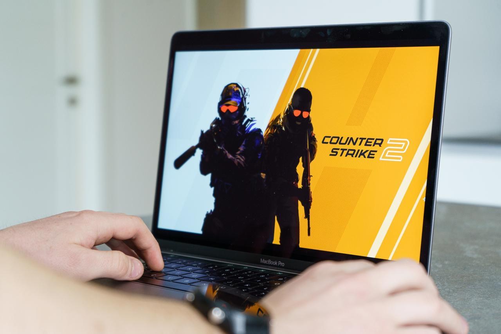
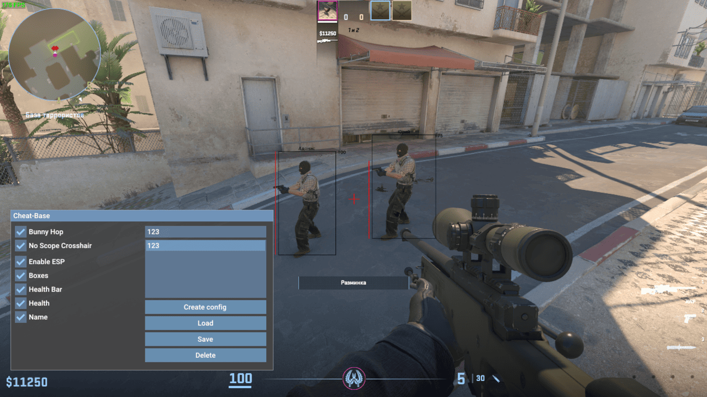
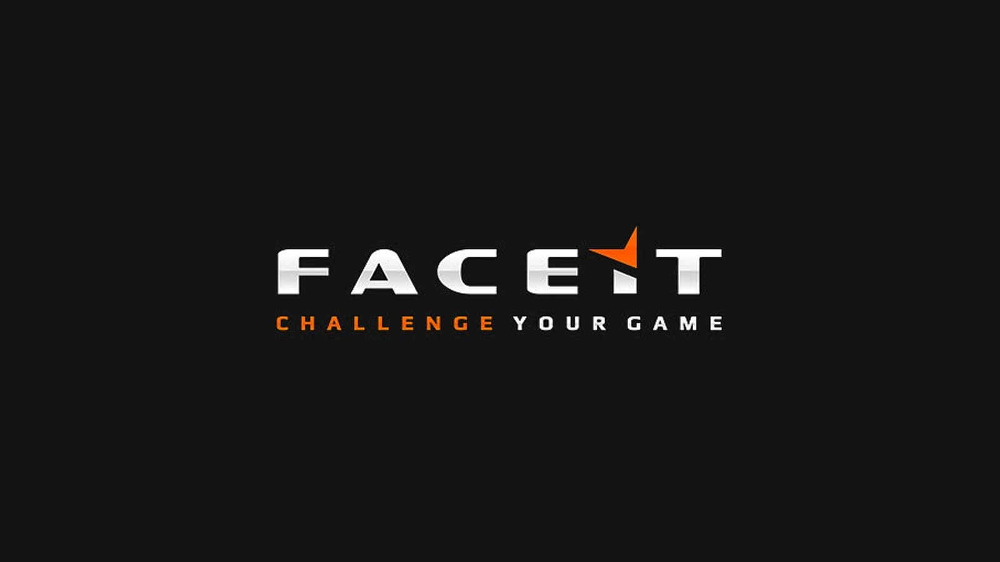
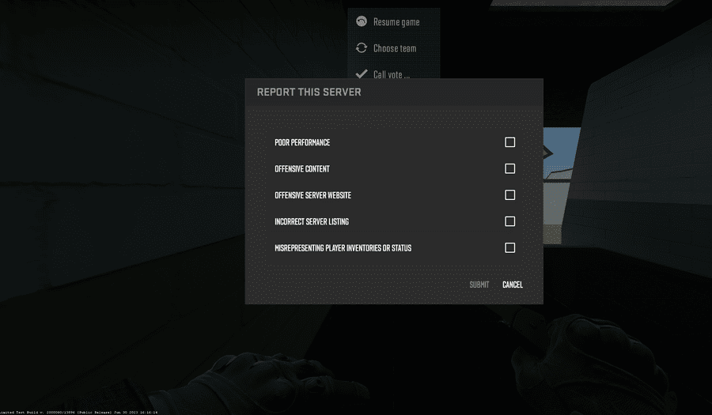

Defending the Rank: The Ultimate CS2 Anti-Cheat Guide
A Guide to Avoid Cheaters in Counter-Strike 2
>
Overview

Counter-Strike 2 is a popular free tactical FPS developed by Valve.
Counter-Strike 2 is a popular free tactical FPS video game developed by Valve Corporation. Unfortunately, its popularity makes it a primary focus for those seeking an unfair competitive advantage.
Users often report frequent encounters with suspected players in Matchmaking. These players are known as cheaters, and they use hacks to see through walls, auto-aim, or reveal enemies on the radar. They often work in pairs and mess with your ranking progress and game experience.
With this guide, you’ll learn how to avoid CS2 cheaters and keep your game clean, fair, and competitive.
What Are Cheats in CS2?
Cheats are unauthorized third-party software that players use to gain an unfair competitive advantage. It includes methods like wallhacks, aimbots, and spinbots that bypass the game’s rules to achieve results not normally possible.

Typical cheat interface showing options like Bunny Hop and ESP.
How does CS2 detect cheats?
Counter-Strike 2 detects cheating activity using the Valve Anti-Cheat (VAC) System. This is a tracking system that identifies potential cheating indicators with high accuracy using machine learning algorithms. The VAC system detects cheats installed on users’ computers.
How does it work? VAC continuously scans the memory and processes on a user's computer for digital "fingerprints" or signatures of known cheat programs. These signatures are unique code patterns that identify specific cheats.
This means that, when a user connects to a VAC-Secured server from a computer with identifiable cheats installed, the VAC system will detect and ban the user from playing CS2 on VAC-Secured servers in the future.
There’s also a new feature called VAC Live, an extension of the VAC System. It operates in real-time, removing cheaters mid-game.
Aimbots
Software that provides auto-aim capabilities.
Spinbots
A hack that forces a player's view to spin rapidly and uncontrollably.
How to avoid cheaters in CS2?
As mentioned before, the CS2 tracking system identifies potential cheating indicators using the VAC System. But sometimes it isn’t enough.
Many users report suspicious activity during Competitive and Premiere matches constantly. Premier is a professional type of match made for serious players, where you need to win10 placement matches to unlock it and get your first CS Rating.
Although it is supposed that cheaters can’t play in Premier, there are still reports of players using wallhacks, aimbots, and other types of cheats during these matches. In fact, cheaters are frequently seen in higher ranks like 20k+ ELO, which is considered “Elite Status”.
These situations lead professional and non-professional players to use third-party platforms for a better experience.
These platforms are known as the best way to avoid CS2 cheaters. They don’t guarantee total eradication of cheaters. Still, they are considered the best “anti-cheat” option chosen by more serious players seeking a fairer, more structured experience than Valve's default matchmaking.
The most popular third-party platform for CS2 is FACEIT, an anti-cheat launcher with a long-standing reputation as the premier platform for CS matchmaking. Users report that FACEIT gives a better experience than CS2 Premier.

FACEIT offers competitive matchmaking with strict anti-cheat measures.
Enter your email, password, and verify your account via the link sent.
Go to settings and click "Add Game".
Select Counter-Strike 2 and connect your Steam profile.
How to Report a Cheater in CS2?
Even though players choose to avoid cheaters in CS2using third-party platforms like FACEIT, it is always a good option to help the CS2 community by reporting suspicious activity in matches to maintain game integrity. It can help Valve's anti-cheat (VAC) system identify and ban malicious actors, improving the experience for CS2 players.
Here are some helpful tips to report cheaters:
First, spot the cheater: Look for strange in-game behavior. Unnatural aim, glitches, wallhacks, and suspicious stats are some red flags that expose cheaters.
Once spotted, follow these steps to report:

Use the in-game report feature to flag suspicious players.
Hold down the “Tab” key and right-click to unlock the cursor.
Find the cheater’s username in the scoreboard.
Click their name and select “Report.”
Select the cheats you believe they’re using and hit “Submit.”
Don’t forget to encourage your teammates to do the same to protect the competitive integrity of CS2!